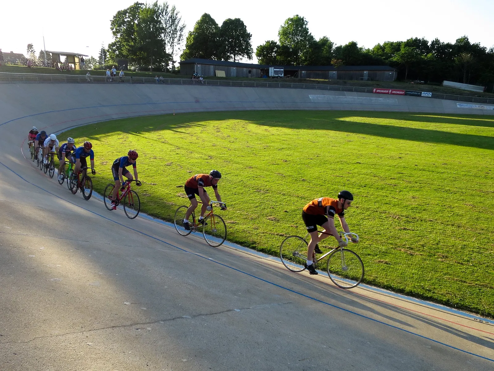

By-Kamp 2016: Klassisk baneløb på Aarhus Cyklebane

Fredag var Niels Bjørnsteen og Kasper Sørensen trukket i de orange farver, og stillede på i B-klassen til By-Kampen på Aarhus Cyklebane. Linjeløb, udskilningsløb og spurtløb.
I linjeløbet blev taktikken om at stikke i højre og venstre fulgt til punkt og prikke. Desværre blev Niels Bjørnsteen hentet en halv omgang før målstregen, og Kaspers ben fik det kun til at række til en 4. plads.
I udskilningsløbet blev Kasper 5’er og i Niels tog en femte plads i spurtløbet, hvor Kasper talte en omgang forkert, og troede han havde en 3- plads i lommen. Protesten blev afvist.

Vinder i B-Klassen blev den tidligere landsholdsrytter Christian Ranneries.
Kasper og Niels blev hhv. 5 og 7. Aarhus Cyklebane har selv en fantastisk beretning fra hele løbet på deres hjemmeside.